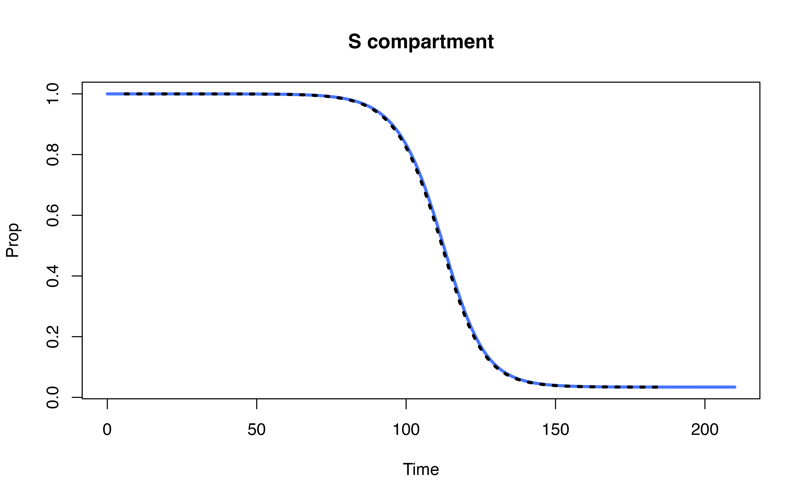
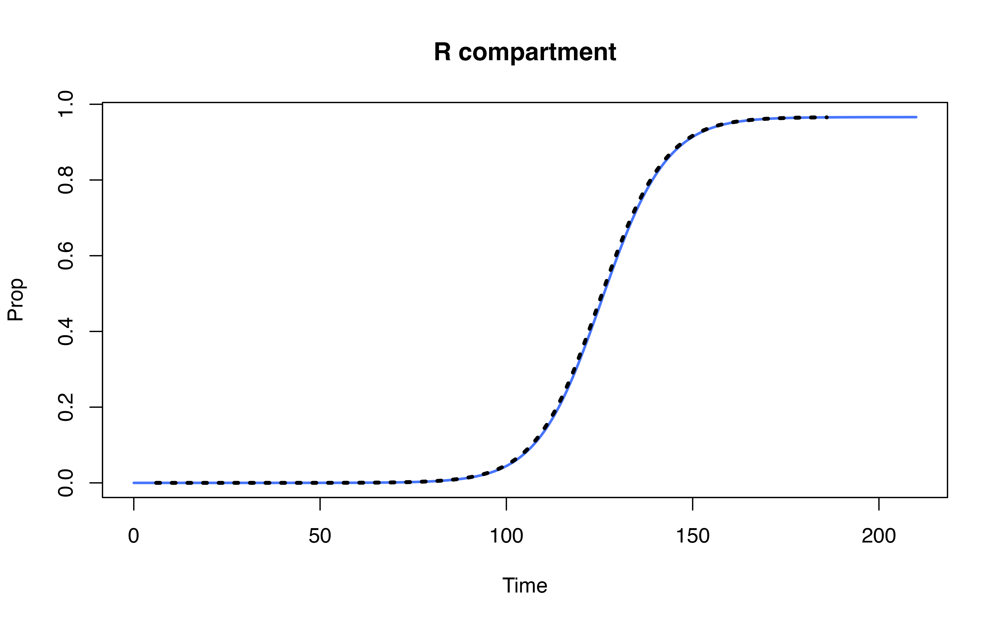
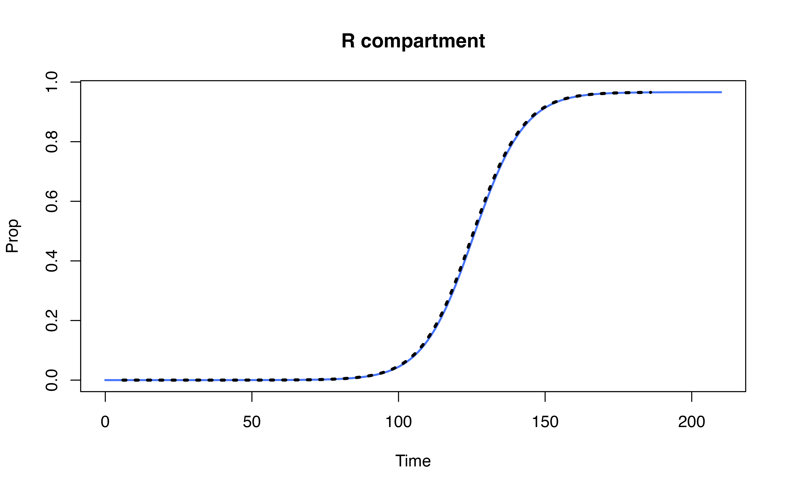

Compare denim performance against uSEIR model (Hernández et al. 2021)
uSEIR defined in Python
Source code: https://github.com/jjgomezcadenas/useirn/blob/master/nb/uSEIR.ipynb
useir implementation in pure Python
## Warning: package 'reticulate' was built under R version 4.3.1
# use_python("/opt/anaconda3/envs/bnn/bin/python", required = TRUE)
use_condaenv(condaenv='bnn', required = TRUE)
matplotlib <- import("matplotlib")
matplotlib$use("Agg", force = TRUE)from scipy.stats import gamma
import matplotlib
import matplotlib.pyplot as plt
matplotlib.use('Agg')
from matplotlib.pyplot import imshow
plt.rcParams["figure.figsize"] = 10, 8
plt.rcParams["font.size" ] = 14
plt.rcParams['savefig.format'] = 'png'
import numpy as np
import pandas as pd
import pyarrow as pa
def plot_useir(dfs, lbls, T = 'uSEIR', figsize=(10,10)):
fig = plt.figure(figsize=figsize)
ax=plt.subplot(1,2,1)
for i, df in enumerate(dfs):
df.head()
ls = f'S-{lbls[i]}'
lr = f'R-{lbls[i]}'
plt.plot(df.t, df.S, lw=2, label=ls)
plt.plot(df.t, df.R, lw=2, label=lr)
plt.xlabel('time (days)')
plt.ylabel('Fraction of population')
plt.legend()
plt.title(T)
ax=plt.subplot(1,2,2)
for i, df in enumerate(dfs):
le = f'E-{lbls[i]}'
li = f'I-{lbls[i]}'
plt.plot(df.t, df.E, lw=2, label=le)
plt.plot(df.t, df.I, lw=2, label=li)
plt.xlabel('time (days)')
plt.ylabel('Fraction of population')
plt.legend()
plt.title(T)
plt.tight_layout()
plt.show()
def solve_uSeir(ti_shape = 5.5,
ti_scale = 1,
tr_shape = 6.5,
tr_scale = 1,
R0 = 3.5):
"""
The pure python version only uses the gamma distribution and fine grain.
It's sole purpose is benchmarking the cython version
"""
# This function is similar to calcTransitionProb in denim
def compute_gamma_pde(t_shape, t_scale, eps, tol):
# compute dwell time steps unit
ne = int(gamma.ppf(tol, a=t_shape, scale=t_scale) / eps)
# transition rate per timestep
pdE = np.zeros(ne)
cd1 = 0
for i in np.arange(ne):
# equivalent to computing sum(pi_i) in denim
cd2 = gamma.cdf(i*eps, a=t_shape, scale=t_scale)
pdE[i] = cd2-cd1 # equivalent compute current transition prob in denim
cd1 = cd2
# return values
# ne: equivalent of dwell time in time steps
# pdE: equivalent to p_i in denim paper
return ne, pdE
N = 1e+6
Smin = 1e-10
Emin = 1e-10
nmax = 21000 # max time steps
eps = 0.01
tr = tr_shape*tr_scale
prob = R0 / tr
pn = prob * eps
tol = 0.9999 # similar to the error tolerance in denim
nE, pdE = compute_gamma_pde(ti_shape, ti_scale, eps, tol)
nI, pdI = compute_gamma_pde(tr_shape, tr_scale, eps, tol)
print(f' Function solve_uSeir: time epsilon = {eps}')
print(f' statistical distribution is Gamma , ti = {ti_shape*ti_scale}, tr = {tr_shape*tr_scale}')
print(f' number of exposed compartments = {nE}, infected compartments = {nI}')
print(f' R0 = {R0}, prob = {prob}, pn = {pn}')
I = np.zeros(nI)
E = np.zeros(nE)
S = 1 - 1/N
E[0] = 1 / N
R = 0
sI = 0
TT = []
SS = []
EE = []
II = []
RR = []
n = 0
while True:
# update R compartment
# I[0] here is equivalent to population that will move to R at t + 0 (i.e. current time step)
R += I[0]
# ----- Simulate for S-I first -----
end = nI - 1 # compute dwell time
# update population for I_k where I_k is the population that will move to R at time t + k (in time step)
for k in np.arange(end):
I[k] = I[k+1] + pdI[k] * E[0]
# pdI[k] * E[0] is just contact rate
# where I[k+1] is value computed from previous timestep (i.e. shift I[k+1] from old iteration to I[k] in current iteration)
I[end] = pdI[end] * E[0]
#print(I)
# ----- Simulate I-E transition -----
end = nE - 1
for k in np.arange(end):
E[k] = E[k+1] + pn * pdE[k] * sI * S
E[end] = pn * pdE[end] * sI * S
#print(E)
# pn * sI * S equivalent to probs * epsilon * S * I/N
S = S - pn * sI * S
sI = np.sum(I)
sE = np.sum(E)
#print(sI)
#print(sE)
TT.append(n * eps)
SS.append(S)
EE.append(sE)
II.append(sI)
RR.append(R)
#print(f't = {n*eps} S = {S} E ={sE} I ={sI} R = {R}')
n+=1
if (sE < Smin and sI < Emin) or n > nmax:
break
df = pd.DataFrame(list(zip(TT, SS, EE, II, RR)),
columns =['t', 'S', 'E', 'I', 'R'])
return df
# print(plt.gcf().canvas.get_supported_filetypes())Run simulation using pure Python implementation
Code for running uSEIR in pure Python
import time
from statistics import mean
runs = []
# --- Get runtime for 10 runs ----
# for i in range(10):
# start = time.time()
# df = solve_uSeir(ti_shape = 2,
# ti_scale = 4,
# tr_shape = 2,
# tr_scale = 3,
# R0 = 3.5)
# end = time.time()
# runs = runs + [end - start]
# mean(runs)
# plot_useir((df,), ('G',), T = 'uSEIR', figsize=(14,8))
# print(f'python solve_seir call: dr = {end-start}')Run time for pure Python implementation is ~ 59.9872
Run simulation using cython implementation
Code for running uSEIR in Cython (C backend)
# import precompiled cython module
import sys
sys.path.insert(0, "../supplements")
import useir
import time
runs = []
# --- Get runtime for 10 runs ----
# for i in range(10):
# start = time.time()
# df = useir.csolve_uSeir(dist = "gamma",
# ti_shape = 2,
# ti_scale = 4,
# tr_shape = 2,
# tr_scale = 3,
# R0 = 3.5
# )
# end = time.time()
#
# runs = runs + [end - start]
# mean(runs)
df = useir.csolve_uSeir(dist = "gamma",
ti_shape = 2,
ti_scale = 4,
tr_shape = 2,
tr_scale = 3,
R0 = 3.5
)## Function compute_pde with sampling = Fine, time epsilon = 0.01
## statistical distribution = gamma, ti = 8.0, tr = 6.0
## number of exposed compartments = 4702, infected compartments = 3526
## len pdE = 4702, max(pdE) =0.0009196976461058881 len pdi = 3526 max(pdI) =0.0012262625368251734
## prob = 0.5833333333333334, pn = 0.005833333333333334Run time for Cython implementation is ~ 0.4140
Run simulation using denim
Code for running uSEIR in denim
library(denim)
denim_model <- list(
"S -> E" = "(R0/tr) * timeStepDur * S * (I/N)", # formulate according that of uSEIR method
"E -> I" = d_gamma(scale = 4, shape = 2),
"I -> R" = d_gamma(scale = 3, shape = 2)
)
initialValues <- c(S = 999999, E = 1, I= 0, R= 0)
parameters <- c(R0 = 3.5,
tr = 3*2, # compute mean recovery time, for gamma it's scale*shape
N = 1e6, timeStepDur = 0.01)
# ---- Get runtimes of 10 runs ----
# runtimes <- sapply(1:10,
# function (i) {
# time <- system.time(
# sim(transitions = denim_model,
# initialValues = initialValues,
# parameters = parameters,
# simulationDuration = 210, timeStep = 0.01)
# )
# return(time[["elapsed"]])
# })
#
# mean(runtimes)
# ---- Get output ----
denim_out <- sim(transitions = denim_model,
initialValues = initialValues,
parameters = parameters,
simulationDuration = 210, timeStep = 0.01)Run time for denim implementation is ~ 1.002
## Warning: package 'arrow' was built under R version 4.3.3##
## Attaching package: 'arrow'## The following object is masked from 'package:utils':
##
## timestamp
 

Hernández, Pilar, Carlos Pena, Alberto Ramos, and Juan José
Gómez-Cadenas. 2021. “A New Formulation of Compartmental Epidemic
Modelling for Arbitrary Distributions of Incubation and Removal
Times.” Edited by Eric Forgoston. PLOS ONE 16 (2):
e0244107. https://doi.org/10.1371/journal.pone.0244107.